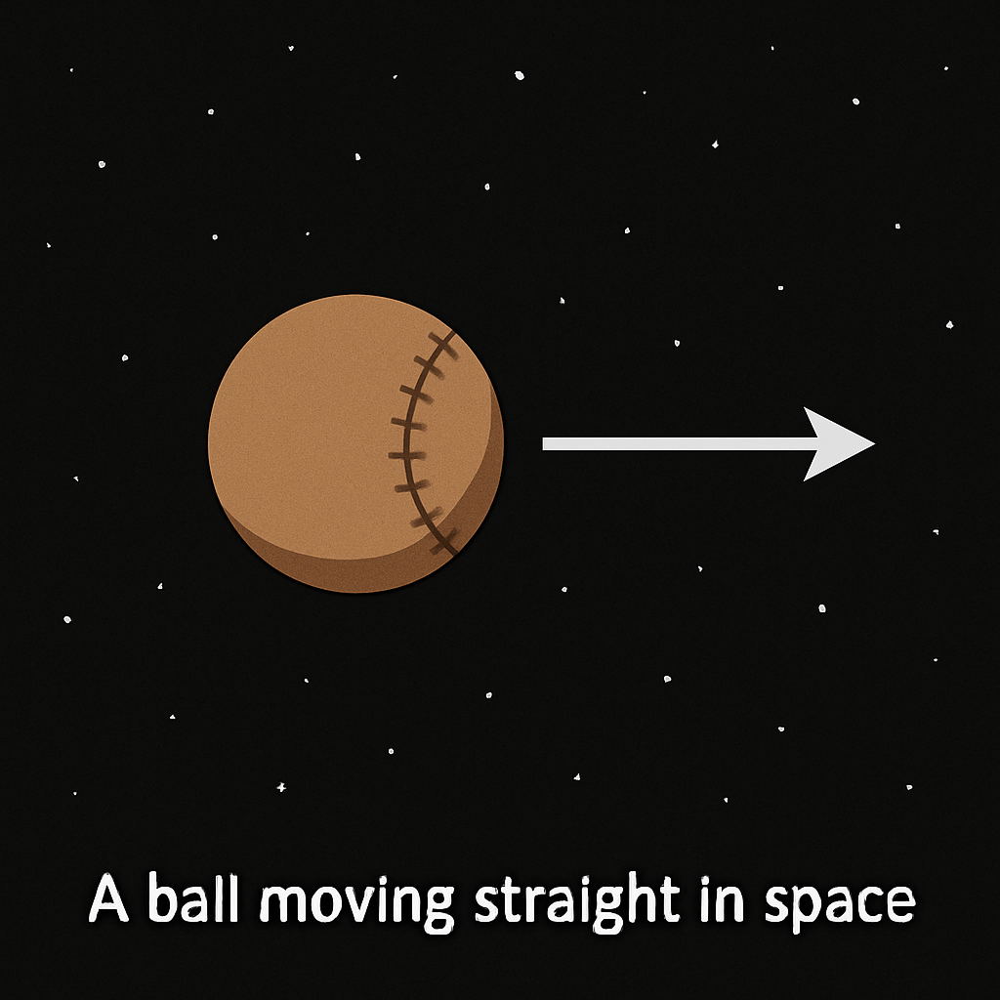
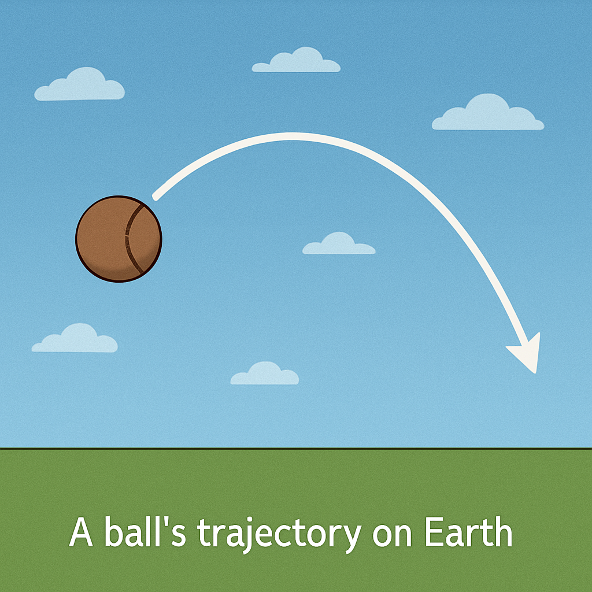

Gravitational Lensing
- Gravitational lensing is the bending of light by gravity, resulting in a similar effect as a lens.
- My goal was to understand more about the different types of lensing and to create a fun way to visualize it.
Course Connection and Personal Interest
- Black holes (which are one object that result in gravitational lensing) are stellar objects that we cover in class. We also cover gravitational wells, which is the reason for lensing, so this topic has a strong connection to the course.
- I have personally always been interested in general relativity, but the concepts are hard to grasp and believe. But gravitational lensing shows these concepts in action, and seeing visual evidence of spactime bending is incredible to me.
Significance
- One of the first major confirmations of general relativity.
- Evidence for dark matter.
- Helps in determining mass of galaxies and clusters.
- Magnifies distant objects, allowing us to study very distant or faint objects.
How Does Gravitational Lensing Work?
- In deep space, a thrown ball keeps moving straight at a constant speed. 
- On Earth, the same ball curves downward because gravity changes its path. 
- Newton’s gravity explains this using forces between masses.
- But Newton’s law can’t explain how light bends (light has no mass).
- Einstein’s relativity gives a new idea: mass and energy curve spacetime.
- Objects move along the straightest possible path in curved spacetime.
- A ball still “goes straight,” but the space it moves through is curved.
- Light follows these straightest paths too, so its path bends near mass.
- This bending acts like a lens → gravitational lensing.
- The path looks curved to us, but locally light always travels straight.


- Gravity bends light.
- Mass curves spacetime, light follows that curvature.
- Light still travels straight, but the space itself is bent.
- More mass means stronger bending.
- Lensing can stretch, magnify, or duplicate background objects.
- Helps reveal objects too faint or distant to see otherwise.
- Occurs around galaxies, clusters, and black holes.
Types of Gravitational Lensing
- Strong lensing: arcs, rings, multiple images.
- Weak lensing: small shape distortions used to map dark matter.
- Microlensing: temporary brightening when objects align.
Einstein Rings
These form when a massive object sits almost perfectly between us and a distant galaxy, bending the light into a circle.

Galaxy Cluster Lensing
Huge clusters contain enough mass to stretch and distort light from many background galaxies, producing arcs and smeared shapes.

Lensed Background Galaxies
When a single distant galaxy lies behind a massive object, its image can be stretched into long arcs or duplicated.

Black Hole Microlensing
In OGLE-2011-BLG-0462, a single stellar-mass black hole was detected by the way it briefly magnified a background star.

Quasar Microlensing (Einstein Cross)
The four images of a distant quasar are further brightened and dimmed by smaller lenses in the foreground galaxy, including black holes.

Photon Ring Around M87*
The Event Horizon Telescope image of M87* shows light bent into a ring (illustrating light bending, not lensing).

- Use the sliders to control the radius of the black hole and FOV (zoom).
- Move the mouse horizontally to see how it affects different parts of the image.
- Use the dropdown to select other background images.
- A Schwarzchild is a non-spinning black hole (which don't exist in reality) so the lensing of a real black hole will be slightly different (and a real black hole will also have an accretion disk).
- Note: The demo may lag on less powerful computers.
Citations
- NASA. (2024). Hubble’s gravitational lenses. NASA Science – Universe Uncovered. https://science.nasa.gov/mission/hubble/science/universe-uncovered/hubbles-gravitational-lenses/
- NASA. (2024, September 23). Hubble’s gravitational lenses. NASA Science – Science Behind the Discoveries. https://science.nasa.gov/mission/hubble/science/science-behind-the-discoveries/hubble-gravitational-lenses/
- NASA Hubble Mission Team. (2022, June 10). Hubble determines mass of isolated black hole roaming our Milky Way galaxy. NASA Science. https://science.nasa.gov/missions/hubble/hubble-determines-mass-of-isolated-black-hole-roaming-our-milky-way-galaxy/
- Gravitational lens. (2025, September 30). Wikipedia. https://en.wikipedia.org/wiki/Gravitational_lens
- Euclid Consortium. (2023, October 6). Mapping the dark Universe with gravitational weak lensing. https://www.euclid-ec.org/mapping-the-dark-universe-with-gravitational-weak-lensing/
- NASA. (n.d.). A horseshoe Einstein ring from Hubble [Image]. https://upload.wikimedia.org/wikipedia/commons/1/11/A_Horseshoe_Einstein_Ring_from_Hubble.JPG
- NASA. (n.d.). Galaxy cluster lensing background galaxies [Image]. https://assets.science.nasa.gov/content/dam/science/missions/hubble/releases/2005/11/STScI-01EVVM6VGK8B31GGMRPTDWD986.jpg
- ESA/Hubble & NASA. (n.d.). Lensed background galaxy arc [Image]. https://live.staticflickr.com/7539/15861603283_3579db3fc6_o.jpg
- NASA, ESA, Kailash Sahu, & Joseph DePasquale. (n.d.). Microlensing-black-hole MOA-2011-BLG-191 (OGLE-2011-BLG-0462) [Image]. https://commons.wikimedia.org/wiki/Special:FilePath/Microlensing-black-hole_MOA-2011-BLG-191.jpg
- NASA, ESA, & STScI. (n.d.). Einstein Cross (QSO 2237+0305) [Image]. https://commons.wikimedia.org/wiki/Special:FilePath/Einstein_cross.jpg
- Event Horizon Telescope Collaboration. (2019). First image of the black hole in M87 [Image]. https://www.eso.org/public/archives/images/screen/eso1907a.jpg
- NASA. (n.d.). Hubble isolated black hole (artist’s concept) [Image]. https://science.nasa.gov/wp-content/uploads/2023/04/hubble_isolatedblackhole_stsci-01frkbznc2yvpadeq69em2yzsn-jpg.webp
- NASA. (2024). Simple gravitational lens diagram [Image]. https://science.nasa.gov/wp-content/uploads/2024/09/gravitational-lens-diagram-simple.jpg